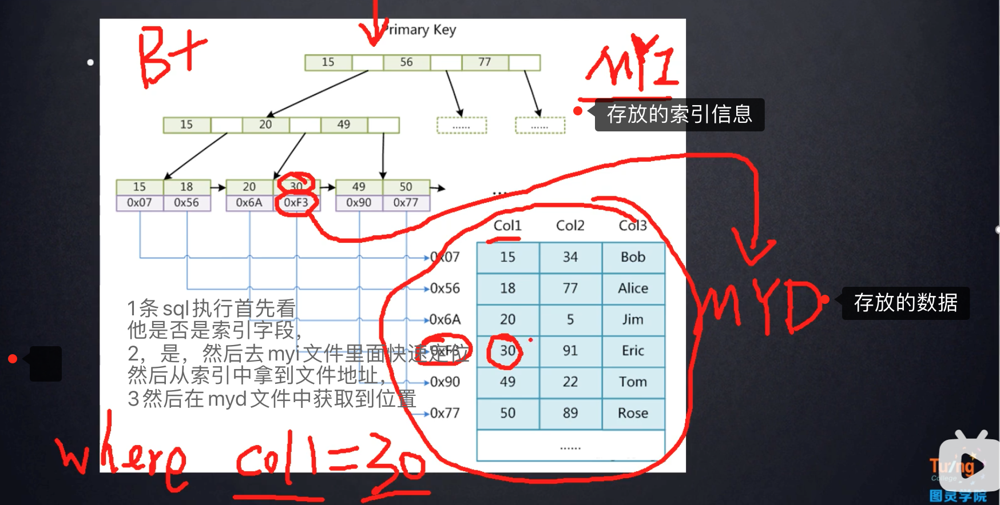
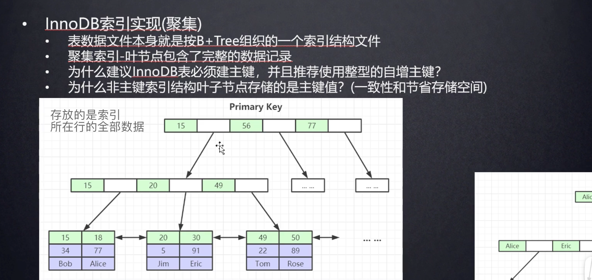

索弓|数据结构
mysql 的查询，是把待查询的数据和磁盘的每一列数据进行比对，每一次都是io操作，
所以如果数据量庞大的话，没有索引的前提下效果自然很慢
二叉树 ，大于的数放在右边，小于的数放在左边，但是是单边增长的，像数据库的自增长的列如果还是使用的是二叉树的话，
那么他的查询效率还是和正常的查询是一样的
如图：如果一个数据库的ID是自增长的，想要搜索到ID为7的数据，需要进行7次比较，那么和正常的查询比较没有区别，
所以索引没有选择以二叉树为数据结构
红黑树 又叫二叉平衡树，其原来和和二叉树类似，但是在往下添加的时候，就会进行自平衡
使用红黑树的时候，查询数据会比单纯的二叉树快很多，比如需要查询数据8 的时候，只需要查询4次，
比二叉树的查询效率提高太多
但是 红黑树仍然不是数据库的索引的数据结构类型 因为当数据量太大的时候红黑树的高度太大，而且不可控，
查询效率还是比较慢，单查询的数字，是刚好位于最底层的叶子节点的时候，查询效率依然很慢
b- tree 树的数据结构 ，每一个节点都有一个data元素，data元素就是索引所在行的磁盘地址文件

b+ tree 树的数据结构 实际上是一个多叉平衡树，每一个元素大小，是从左到右依次递增的
只有叶子节点存储数据data元素，叶子元素拥有整张表的所有索引元素，提取每一个大的索引节点中的第一个元素，作为冗余的中间索引，
来构建一个B+ 树
b+ 树读取的的操作 比如现在要查询一个数据为30 的信息，
1， 将根结点全部加载到内存中（相比较于io操作，将信息加载到内存的消耗忽略不计），
用算法（二分查找法）进行查询，定位到改数据在15-56之间，
2，然后通过二分法再找到30在元素 20-49之间
3，然后再下一步定位到数据在20-30之间，然后定位到30
cpu读取数据，单位是 一页数据 即跟节点的所有数据为1页
查询数据之后会进行释放内存，但是不会立即释放，有一个LRU算法
-- 查看mysql 默认的一页的数据大小 命令
show global status like "Innodb_page_size";
-- 结果 16384个字节，大约是16kb
-- ('Innodb_page_size', '16384');
一个高度为3的b+树，能存放索引的单位数量，
假设 1个索引的容量大小为8字节 ，b+树的数据结构的是 第一个索引旁边的位置是分叉节点磁盘文件地址的存储空间
假设索引的大小是8个byte 分叉节点的大小是6byte,那么第一行的大小是16kb / 14 byte ，
也就是 16384/14 = 1170个索引
那么第一行的存放个数就是 1170个索引 第二行的数据结构一样，所有也是1170 个索引
第三行的索引数据结构不同，会存放一个data元素，不同的数据库引擎存放的是不同的，
默认是索引文件所在行的磁盘地址
假设单个的索引需要1kb的大小，那么16kb就是存放16个元素（因为每一页的数据大小是16kb）
假设当3层的索引全部存满了之后，能够存放的索引的数量为 1170*1170*16 =21902400
所以合理运用索引单表是能做到千万级的数量查询的快速响应的
mysql的高版本 ，非叶子节点，像现在的3层高度，第一层和第二层都是存在内存里面的，
在查找，运行sql之前，都已经加载到内存之中进行比对了，只是在最后一步进行查询的时候才进行数据查询只用进行1次磁盘io，
就能搞定查询，所以效率很高
当数据量太大的时候，上亿，即使有索引，效率也可能不高，不能只考虑select ，还要考虑update
数据库引擎 MyISAM 和 InnoDB 其实从本质上来说是修饰数据库表的，
在建表的时候都可以选择 不同的引擎，那么所以说这个是表级别的引擎而不是数据库的
假设一个数据库中的表包含索引
那么他的文件分布如下假设表名为 sys_task
那么 sys_task.MYD 文件存放的是 表的相关数据 ，
sys_task.frm 存放的是相关数据结构，
sys_task.MYI 存放的是索引相关信息

InnoDB
InnoDB的引擎 数据的文件结构是
.frm 和 .ibd 文件 frm文件是表结构文件， .ibd文件是数据和索引都存在 这个文件

innoDB 和MyISAM 的区别是 MyISAM 的叶子节点存储的是索引的数据在磁盘存储的文件地址
innoDB 存放的是 索引所在行的其他字段 数据信息
聚集索引和非聚集索引的区别 ，1，非聚集索引，就像MyISAM 引擎，他的索引和数据是分开存放的 ，
索引存在MYI文件里面，数据存在MYD文件里面。而InnoDB数据库则是 索引和数据存在.ibd文件里面的
查询效率 聚集索引高，因为减少io读取文件操作
为什么建议InnoDB表必须建主键,并且推荐使用整型的自增主键?
1，必须用B+tree 来组建表数据，如果设置来主键，mysql就会以主键为基础建立b+树
2，如果没有设置主键，那么mysql会在表中寻找一列没有重复值的列，维护到B+树里面，
如果实在没有一列没有重复数据的列，mysql后台会自动帮你建立一列隐藏数据，比如 RowId 列,
且用这一列不重复的数据进行维护成B+树